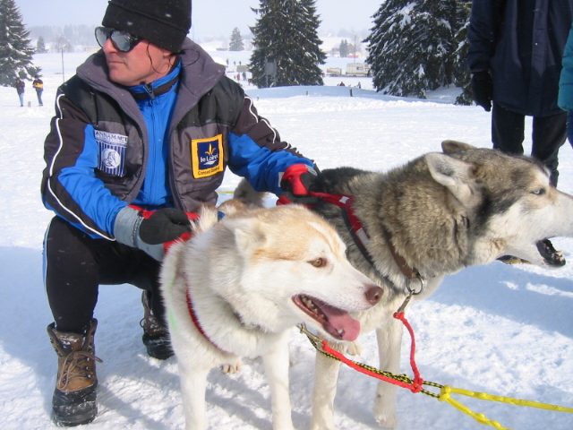
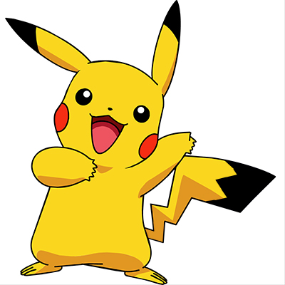

召部
柴犬，是日本犬種之一。屬於小型狗種。柴犬於1936年12月16日被指定為日本的天然紀念物，亦是現存六種日本狗中唯一的小型狗。根據日本狗保存會，在日本被飼養的日本狗種裡，約有八成為柴犬。
公關部
就是負責賣萌 汪汪


器材部
臘腸犬，又稱臘腸狗、達克斯獵犬，是一種短腿，長身的臘犬。其名源於德國，「Dachs」意思是獾，「Hund」意思是狗，原意「獾狗」。此品種被發展為嗅臘，追蹤，及捕殺獾類及其他穴居的動物．
宣傳部
哈士奇（英語：Husky）是對在北方地區用來拉雪橇的一大類狗的通稱，它們因為能夠快速拉雪橇而與其它種類的雪橇犬分開來。「它們種類繁多，基因上多為雜交，速度很快」。相比之下，阿拉斯加雪橇犬是「最大和最強壯的」雪橇犬，通常用於沉重的任務。哈士奇也用於雪橇犬比賽。最近幾年也被有的公司用來在有雪的區域為旅遊的人們拉雪橇觀光。哈士奇也可作為寵物。原生活地來自西伯利亞。

